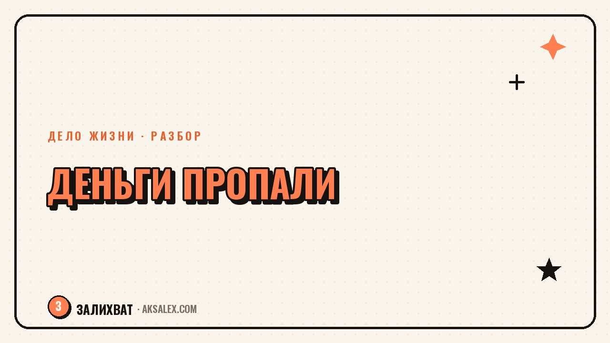

Что делать, если любимое дело перестало приносить деньги

Сначала всё шло нормально: заказы были, доход рос или хотя бы держался стабильно. А потом - тишина. Клиенты пропали, продажи встали, деньги перестали приходить, хотя дело вроде то же самое и ты не делаешь ничего по-другому. Первая реакция - паника и мысль «значит, это было не моё». На практике причина почти всегда конкретнее и решается не отказом от дела, а разбором того, что именно изменилось.
Почему дело вдруг перестаёт кормить
Доход от дела, которое строится на тебе самом - услуги, творчество, небольшой бизнес - почти никогда не растёт по прямой линии. Он скачет: сезонность, смена алгоритмов площадок, перемены в спросе, усталость, которая незаметно снижает качество. Когда падение случается резко, кажется, что причина в самом деле - «значит, оно не работает». На деле чаще всего совпали несколько факторов одновременно, а не один фатальный.
Отдельная ловушка - сравнение с собственным прошлым пиком. Если три месяца назад заказов было много, а сейчас мало, разница ощущается как провал. Но пик часто был разовым совпадением обстоятельств, а не новой нормой, к которой дело обязано вернуться.
Сначала диагностика, потом решение
Паника подталкивает либо бросить всё немедленно, либо наоборот - вкладывать ещё больше сил без понимания, во что именно. Полезнее сначала честно разложить ситуацию на составляющие: что именно изменилось - рынок, твои силы, конкуренция, формат подачи. Это не про самокопание, а про обычную диагностику, которую делают в любом деле при спаде.
Вопросы, с которых стоит начать
- Изменилось ли поведение аудитории или площадки, где ты работаешь, за последние месяцы
- Снизилось ли твоё собственное вовлечение - меньше сил, меньше внимания к деталям
- Появились ли новые конкуренты или альтернативы, которых раньше не было
- Был ли предыдущий доход действительно стабильным или держался на одном крупном клиенте или разовой удаче
Три типичных причины спада
| Причина | Как проявляется | Что проверить первым |
|---|---|---|
| Внешний рынок изменился | Спрос упал у всех в нише, не только у тебя | Поговори с коллегами в этой же сфере - падение общее или только твоё |
| Выгорание и снижение качества | Заказы делаются медленнее, с меньшим вниманием к деталям | Честно оцени, сколько реальной энергии вкладываешь сейчас по сравнению с пиком |
| Устаревший формат подачи | Раньше заходило, а похожие у других до сих пор работают | Сравни, что изменилось в упаковке, цене или подаче за последний год |
Временный спад или сигнал что-то менять
Не каждый спад значит, что дело исчерпало себя. Разница в том, осталось ли у тебя желание заниматься этим, если убрать вопрос денег на минуту. Если дело по-прежнему увлекает, а пропал только денежный поток - это задача маркетинга, формата или паузы на восстановление сил. Если само дело вызывает усталость и раздражение ещё до мысли о деньгах, вопрос шире, чем падение дохода.
Падение дохода - это сигнал проверить гипотезу, а не вердикт о том, что дело было ошибкой. Большинство дел проходят через такие провалы, об этом только редко рассказывают.
Что можно сделать прямо сейчас
- Посчитай реальные цифры за полгода, а не ощущения - часто спад не такой катастрофический, как кажется в моменте
- Спроси нескольких прошлых клиентов напрямую, почему они не возвращаются - ответ часто конкретнее, чем догадки
- Пересмотри один элемент подачи - цену, формат, площадку - и дай изменению хотя бы месяц, не бросай дело в тот же день
- Найди временный источник дохода на стороне, если финансовая тревога мешает думать ясно - это не предательство дела, а способ выиграть время
Важно делать это по шагам, а не всё сразу. Одновременная смена цены, формата и площадки не даст понять, что сработало, а что ухудшило ситуацию ещё больше.
Когда стоит менять формат, а не бросать дело
Если после честной диагностики причина оказалась внешней - рынок изменился, площадка перестала работать так, как раньше - решение почти всегда в смене формата, а не отказе от сути дела. Фотограф, у которого упал спрос на съёмки, может перейти в обучение или консультации, оставаясь в той же области, которая его увлекает.
Отказ от дела целиком имеет смысл только тогда, когда само занятие больше не приносит интереса, независимо от денег. Если интерес остался, а пропали только деньги - это задача на пересборку, а не на расставание.
Частые вопросы
Что делать, если любимое дело перестало приносить деньги
Сначала разобраться, в чём причина: внешний рынок, собственное выгорание или устаревший формат подачи. От причины зависит решение - пауза, смена формата или время, чтобы пересидеть временный спад.
Как понять, что дело исчерпало себя, а не это временный спад
Главный признак - осталось ли желание заниматься этим, если на минуту убрать вопрос денег. Если дело всё ещё увлекает, а пропали только заказы, это вопрос маркетинга или формата, а не конца дела.
Стоит ли сразу бросать дело при падении доходов
Резкие решения в панике редко бывают верными. Полезнее сначала посчитать реальные цифры за несколько месяцев и спросить у прошлых клиентов, почему они не возвращаются, а уже потом решать, менять формат или уходить.
Как пережить финансовую тревогу, если дело перестало кормить
Временный источник дохода на стороне - нормальный способ выиграть время для спокойной диагностики. Это не предательство дела, а способ не принимать решения в состоянии паники из-за нехватки денег.
Почему доход от дела падает, хотя ничего не изменилось
Чаще всего меняется не твоё дело, а рынок вокруг него: поведение аудитории, конкуренция, алгоритмы площадок. Поэтому стоит сравнивать свою ситуацию с коллегами в той же сфере, а не искать причину только в себе.
Раз тема оказалась полезной, вот что почитать следующим. ИИ не заменит консульство, но сильно ускорит сбор пакета документов на визу - если знать, где ему можно доверять, а где нет.
Читать статью →а не вручную